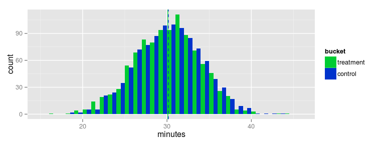

(remember, red background means that there is a statistically significant effect)
plot_grid( data )
Paulo Villegas
November 2014
Imagine we have decided our web application would look much better and improve the user experience if the background were a nice, calming grey instead of the current too-bright-white.
Our customers would be much better served!
We prepare two versions of the service:
The control group will be served the current, dull white background
While the treatment group will be served the new, much improved, grey background. They will be much happier and use more our service
Our evaluation metric is total minutes spent per day for each user. So that’s what we will measure.
Unfortunately in the simulation we’ll do our users are not sensitive to background color: they act the same (and hence spend the same amount of minutes) regardless of the colour.
Beyond the natural variation across users in minutes spent, there is no actual difference between groups, no matter how pretty our background is.
We’ll generate the treatment & control groups as random variables with that SAME mean: two groups of users that spend on average the same amount of time with us.
# Our users spent on our site an average of half an hour, with a deviation of 4 minutes
VALUE = 30
SD = 4i.e. we have no effect here
As it’s a random assignment from a population with the same behaviour, we also expect the variance of those two groups to be the same
# And we will put 1000 users (small sample!) in each of our treatment and control groups
SIZE = 1000
# Generate our treatment and control groups
vt = rnorm( SIZE, mean=VALUE, sd=SD)
vc = rnorm( SIZE, mean=VALUE, sd=SD)
# Let's put them into a data frame, for plotting purposes
data1 = data.frame( minutes=vt, bucket='treatment' )
data2 = data.frame( minutes=vc, bucket='control' )
values = rbind( data1, data2 ) We plot those distributions, and we mark also the actual means we got
library('ggplot2')
ggplot() +
geom_histogram(data=values, aes(x=minutes, fill=bucket), binwidth=1, position='dodge') +
geom_vline(aes(xintercept=mean(vt)),
color="#00CC33", alpha=1) +
geom_vline(aes(xintercept=mean(vc)),
color="#0033CC", linetype="dashed", alpha=1) +
scale_fill_manual( values=c("#00CC33","#0033CC"))
… and both distributions seem pretty close. Treatment doesn’t make a difference. Exactly as we designed our simulation.
# Let's make a statistical test: we compare both means looking for a significant difference
# We do a one-tailed t-test. Our H1 is: the treatment has a higher mean.
t.test( vt, vc, alternative='greater' )##
## Welch Two Sample t-test
##
## data: vt and vc
## t = 0.2203, df = 1994.414, p-value = 0.4128
## alternative hypothesis: true difference in means is greater than 0
## 95 percent confidence interval:
## -0.2549385 Inf
## sample estimates:
## mean of x mean of y
## 29.91643 29.87703… as expected, we don’t reject H0: there is no effect here.
So our try with the grey background was not successful :-(
Ok, our first try did not work: we got no effect by changing the background.
But we still believe in our hypothesis, so we want to make more tries. Using different greys for the background
Let’s simplify by defining a couple of utility functions, which will allow us to generate multiple simulations. Skip them if you want to get directly to the meat.
# Simulate <num> runs of a t-test comparing the means of two random variables with the SAME mean
#
generate_tests <- function( num ) {
values = data.frame()
rtests = data.frame()
for( idx in 1:num ) {
# Generate the treatment & control groups
vt = rnorm( SIZE, mean=VALUE, sd=SD)
vc = rnorm( SIZE, mean=VALUE, sd=SD)
# Perform a 1-tailed significance test, testing for a greater value of the treatment group
r = t.test( vt, vc, alternative='greater' )
# Pack all into a single data frame
data1 = data.frame( minutes=vt, bucket='treatment', idx=idx )
data2 = data.frame( minutes=vc, bucket='control', idx=idx )
values = rbind( values, data1 )
values = rbind( values, data2 )
# And pack also the test results into another dataframe
rtests = rbind( rtests, list(idx=idx, treatment=mean(vt),
control=mean(vc), p.value=r$p.value,
minutes=0) )
}
return (list(values=values,rtests=rtests))
}# Plot in a grid the data frame containing all tests made in the run, also indicating for
# each test the mean for treatment and control groups
# If any of those tests contains a statistically significant difference, the plot will
# be highlighted in red
#
plot_grid <- function( data ) {
g = ggplot() +
# histograms
geom_histogram(data=data$values, aes(x=minutes, fill=bucket), binwidth=1, position='dodge') +
scale_fill_manual( values=c("#00CC33","#0033CC")) +
# means for treatment
geom_vline(data=data$rtests, aes(xintercept=treatment),
color="#00CC33", alpha=1) +
# means for control
geom_vline(data=data$rtests, aes(xintercept=control),
color="#0033CC", linetype="dashed", alpha=1)
# If there are significant tests (with p<0.05), highlight them
significant = subset(data$rtests, p.value<0.05)
if( nrow(significant) > 0 )
g <- g +
geom_rect( data=subset(data$rtests,p.value<0.05),
aes(xmin=-Inf, xmax=Inf, ymin=-Inf, ymax=Inf), fill='red', alpha=0.3 )
# Grid by test number
g <- g + facet_wrap( ~ idx )
# Plot it. Suppress the warnings we might get because of the rect geom not covering the
# whole idx factor (only the plots with p<0.05)
suppressWarnings( print(g) )
}Now we can try two other different greys for the background, and test each one of them
data = generate_tests(2)
plot_grid( data )Still nothing. Let’s try 4 more greys …
data = generate_tests(4)
plot_grid( data )Ok, let’s bite the bullet and test 100 different shades of grey …
data = generate_tests(100)(remember, red background means that there is a statistically significant effect)
plot_grid( data )
Finally there is something: some of the greys do work. Users spend more minutes with them
But wait a minute: didn’t we said that all simulations have been made with no effect?
In a sentence: statistical fluctuation
which means that the probability of “failing to adequately reject H0” is 0.05
in other words, the probability of obtaining a difference between treatment and control greater than our significance threshold due to chance is 5%
translating: quite probably in 5 out of every 100 tests with no effect we will nevertheless detect an effect
and this is (roughly) what we saw